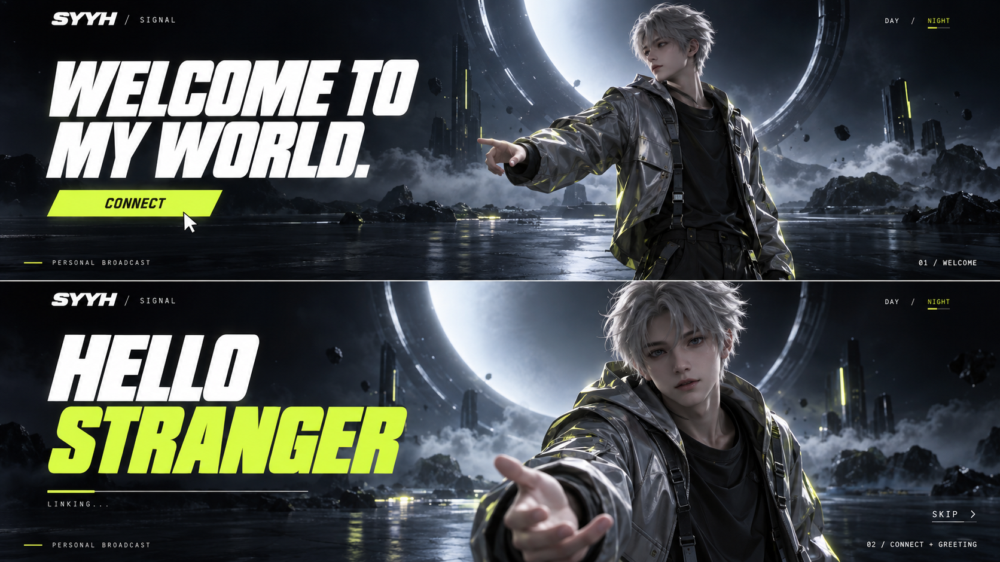
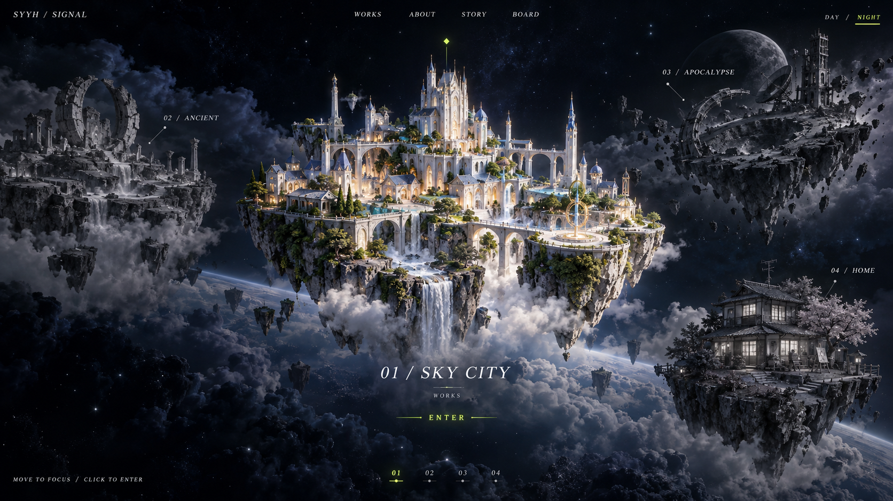
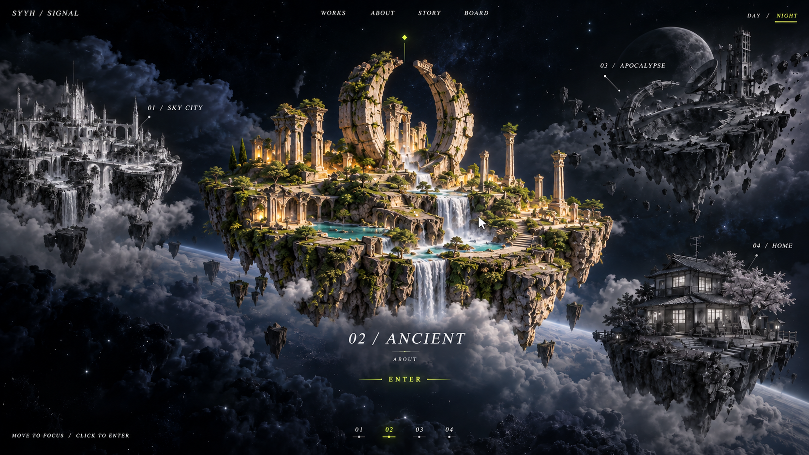
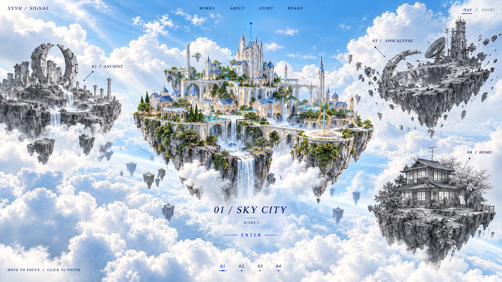

SYYH / SIGNAL · V3 DESIGN REVIEW · 2026-10-12
欢迎、招呼、全屏世界。
本轮仅为设计图提案。人物从卡片中走入背景；四岛从地图框中展开到整个视口。悬停聚焦并居中，点按才进入频道。
WELCOME → CONNECT → HELLO STRANGER → WORLD
01 · 欢迎与招呼
没有昵称输入。点击CONNECT后播放招呼，再自动进入主站。右侧人物融入统一背景、光照与空间，视线跟随鼠标；人物造型仍为代理。

02 · 世界铺满视口
天空之城在中心点亮，其他三座岛保留灰色轮廓与频道标签。品牌、导航、主题和操作提示以轻量覆盖层悬浮在天空中。

03 · 鼠标换岛
移向远古地貌后，远古岛接替中心并恢复彩色，天空之城变灰退至周边。悬停负责聚焦，点按当前岛或ENTER进入频道。

04 · 蓝白Day
同一全屏世界和岛屿轮廓，环境改为蓝白天光、文字深蓝、动作提示蓝色。仍然只让当前岛点亮，其余岛灰色。
